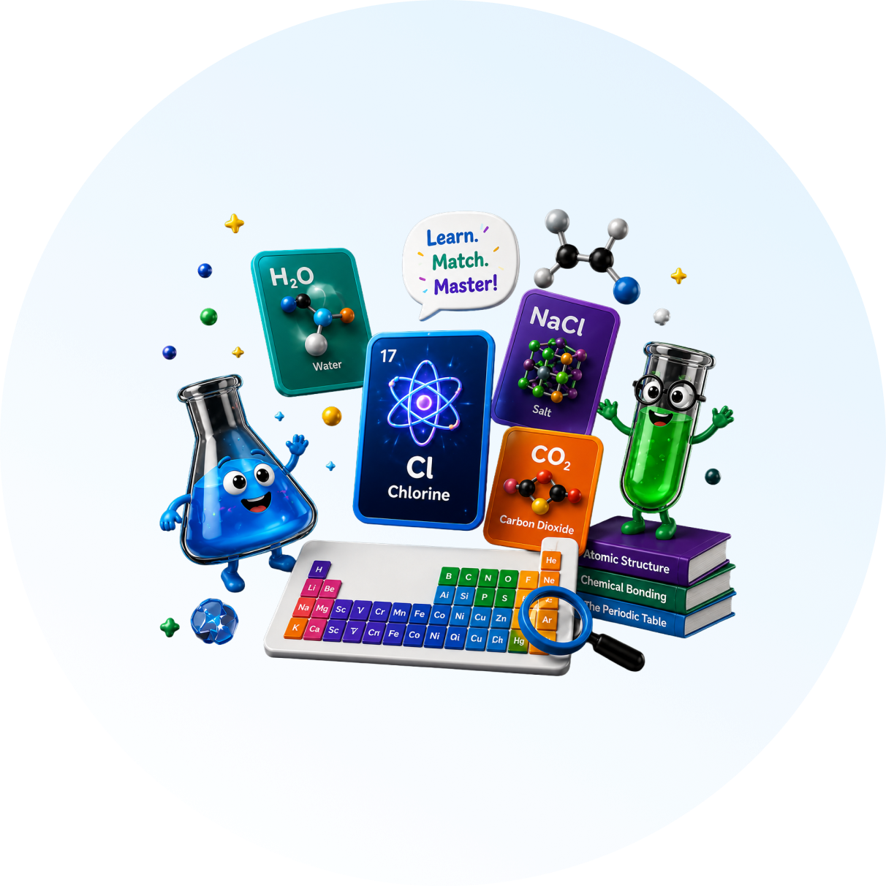

Active Recall
Matching chemistry cards forces your brain to actively retrieve information — building stronger, longer-lasting memory connections than passive revision.
The interactive card-matching game built for Secondary School Science Learning. Build confidence across biology, chemistry, and physics by matching concepts, recognizing patterns and making connections true active learning, not passive reading.

SciSolitaire turns retrieval practice into short matching challenges. Learners actively recall information, recognize relationships between concepts and receive feedback they as play.
Matching chemistry cards forces your brain to actively retrieve information — building stronger, longer-lasting memory connections than passive revision.
Each deck covers one GCSE or KS3 chemistry topic in depth. Focus on what matters most for your upcoming assessments.
Earn coins for every correct match. Track your score, completion time, and hints used — celebrating progress at every step.
Plain English mode, adjustable text size, high contrast, and reduced motion make Chemistry Solitaire accessible to all learners.